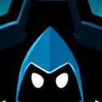
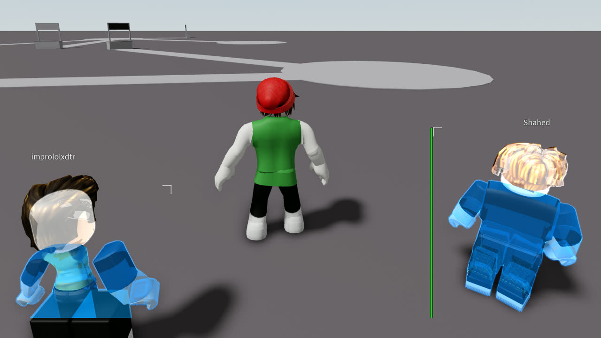

Version 6.0 rebuilds the overlay's menu and its 3D chams. Two minutes of it running live: every menu page, every ESP tab, then each chams style switching on real players.

Glow and outline thin out past 20 studs, so a crowd at range stays readable instead of glowing white.
Dynamic heads use Roblox's newest compressed mesh format. They now load like everything else.
A thin dark line around each player, so they stand out on bright and dark maps alike.
Once the hook works on a Roblox version, Nexus remembers it and goes straight to it next launch.
Hold drawing to your screen's refresh, or let it run free. Applies at once, no restart.
Type a page name or a word like team, skin or cache and jump straight there.